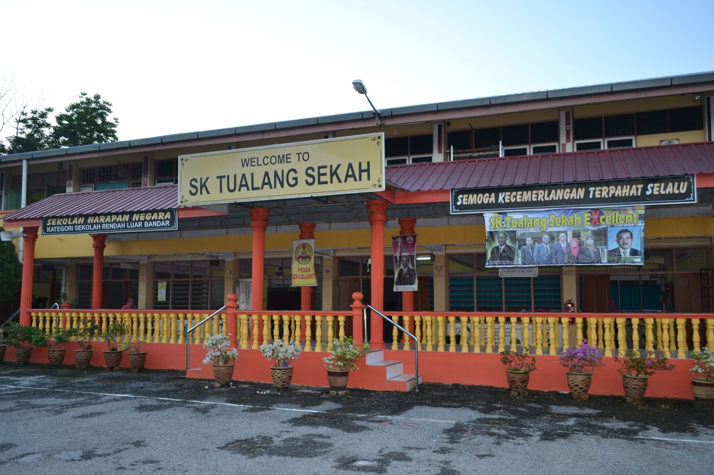

SK Tualang Sekah
SK Tualang Sekah is a nurturing educational institution nestled in the heart of its community, fostering a dynamic learning environment where students are encouraged to explore, innovate, and thrive. With a rich history of academic excellence and a dedicated team of educators, SK Tualang Sekah provides a holistic approach to education, empowering students with not only knowledge but also the skills and values necessary for success in an ever-evolving world. From its picturesque surroundings to its vibrant student life, SK Tualang Sekah stands as a beacon of educational excellence, shaping young minds and shaping the future.
2011 - 2016